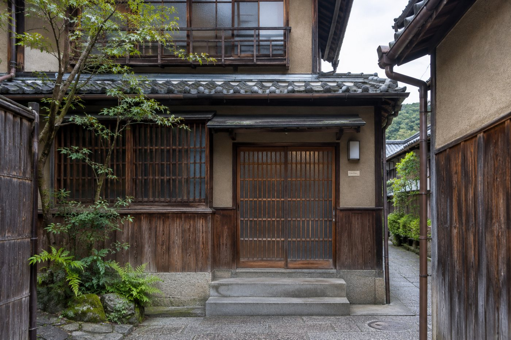
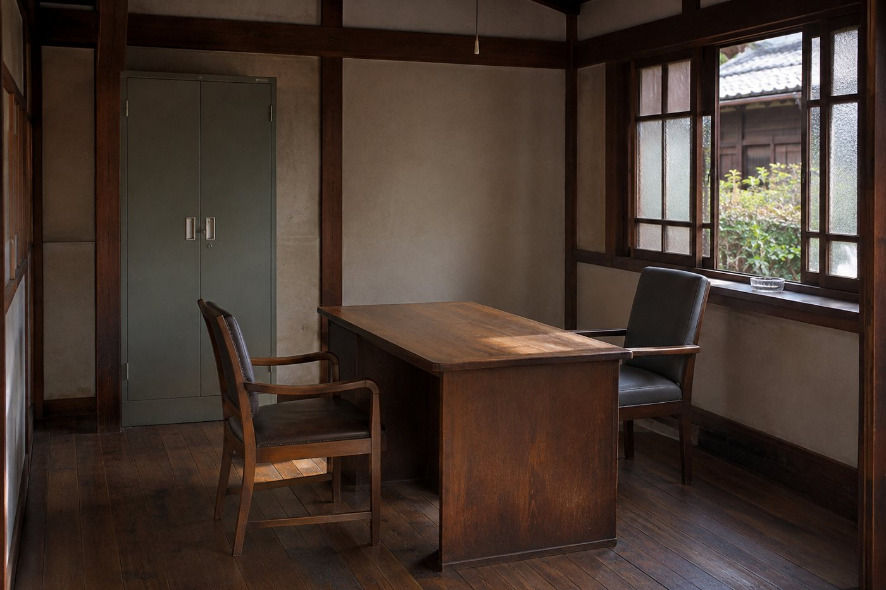
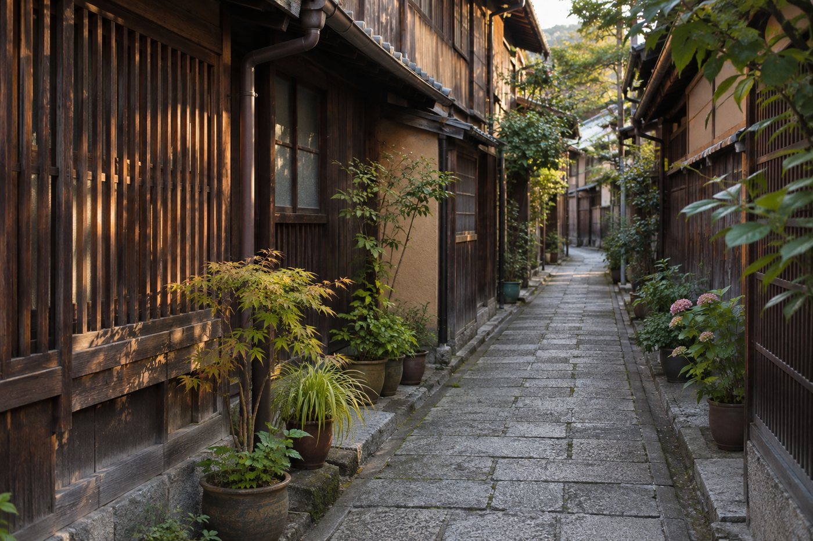

トップ ＞ 事務所概要
事務所概要・アクセス
事務所概要
| 名称 | 白鷺私立探偵事務所 |
|---|---|
| 代表 | 白鷺 雅 |
| 開設 | 2021年5月 |
| 従業者 | 1名（代表のみ） |
| 所在地 | 京都市東山区 三条通の南、古川町商店街の近く 番地は、面談のご予約のときにお伝えしています。相談に来られた方と、調べられている側の方が入口で鉢合わせするのを避けるためです。 |
| 面談 | 完全予約制。火・木 13:00〜18:00、土 10:00〜13:00 事務所のほか、ご自宅やご指定の場所へ伺います。 |
| 休み | 日曜・祝日、8月中旬、年末年始 月・水・金と、火・木の午前、土の午後は調査に出ています。捜索中の案件は休みの日も続けます。 |
| ご連絡 | ご相談フォームから。翌営業日の夜までに折り返します（急ぎの場合は当日）。 |
| 対応地域 | 京都市内と、電車・バスで行ける近郊（宇治、向日、長岡京、亀岡、大津のあたりまで） 車を使わないため、駅やバス停から歩いて30分を超える場所は、張り込みと泊まり込みをお受けできません。聞き込みと下見だけなら伺います。 |
| 探偵業の届出 | 京都府公安委員会に届け出ています。標識は下のとおりです。 |
| 登録 | 日本オカルト協会 公認調査員（2022年登録） |
お受けした調査の内訳
2021年5月〜2026年10月。ご相談 312件のうち、契約して調査をしたもの 118件。
| 種別 | 件数 | ひとこと |
|---|---|---|
| ペットの捜索 | 41件 | 猫が8割。 |
| 聞き込み・固定点の張り込み | 22件 | |
| 原因のわからないご相談 | 19件 | うち2件は、調査の前に別の窓口をご案内。 |
| 人探し | 17件 | |
| 付きまといの記録と同行 | 14件 | |
| 来歴調べ | 5件 |
ご相談のうち契約に至らなかった194件は、お話だけで済んだもの、同業者をご紹介したもの、お断りしたものです。このほか、同業の事務所から聞き込みと資料調べの部分だけを請けることがあり、上の件数には入れていません。事務所の収入の半分ほどはそちらです。
事務所のようす


古い木造の二階建ての一階を借りています。路地の奥で、看板は出していません。引き戸の横に、名刺ほどの大きさの表札があるだけです。
中は六畳ほどの板の間で、机がひとつ、向かい合わせの椅子が二脚、鍵のかかる書類の保管庫がひとつ。お話を伺うあいだ、ほかの方が入ってくることはありません。段差が二段あります。車椅子の方、足の悪い方は、こちらから伺いますのでお申し付けください。
煙草を吸いますが、面談の前は吸わず、窓を開けておきます。気になる方は、外でお会いしましょう。
アクセス
| 地下鉄 | 東西線「東山」駅から、歩いて4分ほど |
|---|---|
| 京阪 | 京阪本線「三条」駅から、三条通を東へ歩いて9分ほど |
| 市バス | 「東山三条」停留所から、歩いて3分ほど 京都駅からは206系統で25分前後。 |
| お車 | 駐車場はありません。近くのコインパーキングをご利用ください。 |
路地がわかりにくいので、はじめての方は東山駅の改札までお迎えに上がります。

聞き込みで歩くことが多いのは、古川町商店街から白川沿い、粟田口、岡崎にかけてです。この辺りのご相談は、道と家の並びがわかっている分、早く動けます。
届出と登録について
探偵業の標識
探偵業を営むには、営業所ごとに都道府県の公安委員会へ届け出て、標識を営業所の見やすい場所に掲げることになっています。従業者が5人以下の事業者は、ホームページへの掲載までは義務づけられていませんが、下に写しを載せます。原本は事務所の入口の内側に掲げてあり、面談のときにご覧いただけます。
日本オカルト協会について
怪異とされる現象の聞き取りと現地の記録を集めている、民間の任意団体です。1978年にできて、会員は全国に200人ほど。郷土史家、建築や設備の技術者、僧職の方、記者などがいます。
公認調査員は、記録の取り方（日時・位置・複数人での確認・思い込みを避ける手順）の講習を受け、筆記と実地の審査に通った会員が登録されるものです。国や公的機関の資格ではなく、特別な権限もありません。私は2022年に登録しました。協会を通じて回ってくるご相談が、年に数件あります。
探偵業標識
| 届出書を提出した公安委員会の名称 | 京都府公安委員会 |
|---|---|
| 届出書の受理番号 | （ホームページでは省略） |
| 届出書を提出した年月日 | 令和3年4月 |
| 商号、名称又は氏名 | 白鷺 雅 |
| 営業所の名称 | 白鷺私立探偵事務所 |
| 営業所の所在地 | 京都市東山区（番地は省略） |
| 営業所の種別 | 主たる営業所 |
| 広告又は宣伝をする場合に使用する名称 | 白鷺私立探偵事務所 |
標識の写し。この事務所は架空のため、実在の届出・受理番号はありません。
日本オカルト協会
認定証
認定番号 第 K-0047 号
白鷺 雅 殿
貴殿は当協会の定める調査員審査に合格し、不可解な事象の調査と記録に必要な知識と節度を備えるものと認めます。よってここに公認調査員として認定します。
日本オカルト協会は架空の団体です。